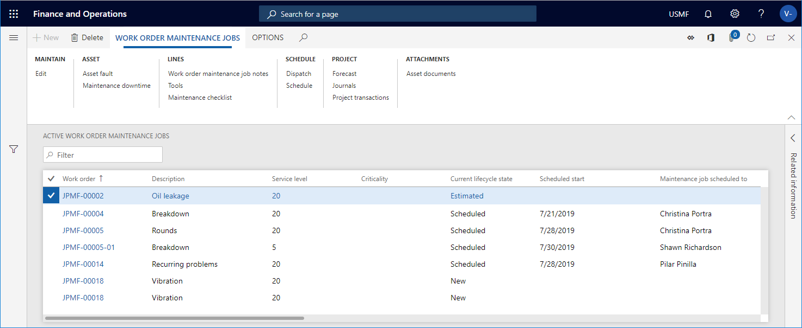

Aktive Wartungsaufträge für Arbeitsaufträge – Übersicht
Important
Dynamics 365 for Finance and Operations hat sich zu speziell entwickelten Anwendungen entwickelt, mit denen Sie bestimmte Geschäftsfunktionen verwalten können. Weitere Informationen zu diesen Änderungen finden Sie im Dynamics 365-Lizenzierungshandbuch.
Auf der Listenseite Aktive Wartungsaufträge für Arbeitsaufträge erhalten Sie einen Überblick über Arbeitsaufträge in Bezug auf wie viele Arbeitsaufträge für bestimmte Anlagen, Anlagentypen, Hersteller, Modelle, Wartungsauftragstypen usw. erstellt wurden. Wenn Sie einen Arbeitsauftragseinzelvorgang auswählen und dann Bearbeiten auswählen, können Sie den zugehörigen Arbeitsauftrag öffnen. Wenn Sie einen Arbeitsauftragseinzelvorgang auswählen und dann eine der Schaltflächen auf der Registerkarte Wartungsaufträge für Arbeitsaufträge im Aktivitätsbereich auswählen, können Sie die Daten für den Arbeitsauftrag anzeigen, auf den sich der Arbeitsauftragseinzelvorgang bezieht.
Wählen Sie Anlagenverwaltung > Allgemein > Arbeitsaufträge > Aktive Wartungsaufträge für Arbeitsaufträge aus, um die Listenseite zu öffnen. Die Listenseite enthält alle aktiven Arbeitsauftragseinzelvorgänge und zeigt auch einige Informationen bezogen auf den Arbeitsauftrag oder Arbeitsauftragseinzelvorgang an.
In der Spalte % gibt eine Zahl den Abschluss des Arbeitsauftrags in Prozent an. Der Abschluss basiert auf zwei Berechnungen: den gebuchten Stunden im Vergleich zu den geplanten Stunden und der Anzahl der abgeschlossenen Wartungsprüflisten.
Die folgende Abbildung zeigt ein Beispiel für die Listenseite Aktive Wartungsaufträge für Arbeitsaufträge.

Eine Kurzbeschreibung der Schaltflächen für die Listenseite Aktive Wartungsaufträge für Arbeitsaufträge, finden Sie unter Einführung in Arbeitsaufträge, wo identische Schaltflächen beschrieben werden.